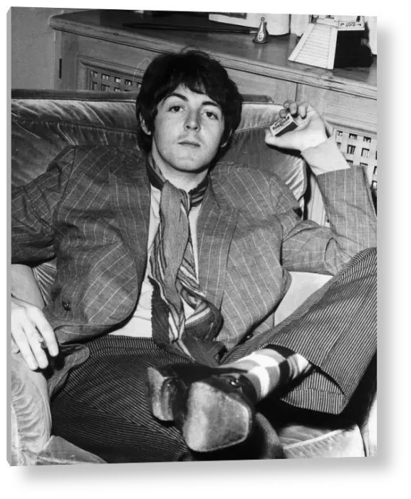
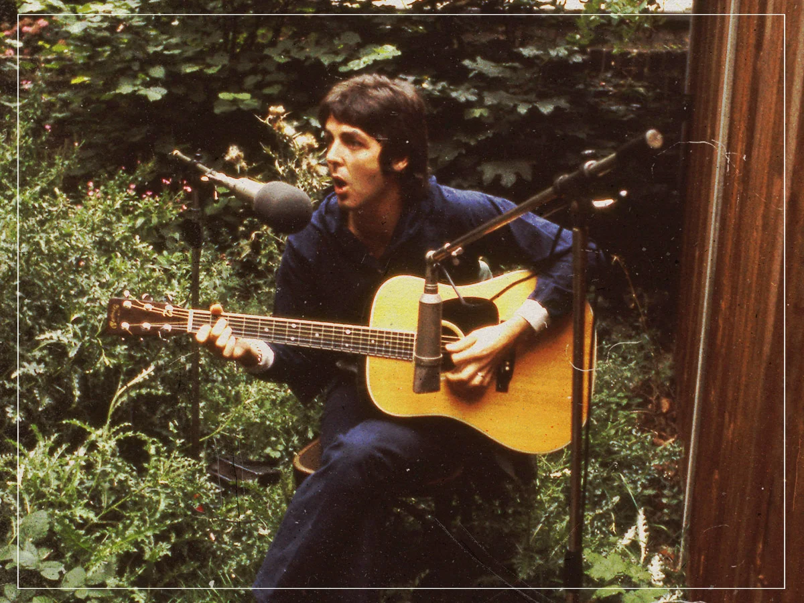

Paul McCartney
Cantor, compositor, baixista e um dos principais nomes dos Beatles.
Infância e Início
Paul James McCartney nasceu em 18 de junho de 1942, em Liverpool, na Inglaterra. Desde jovem demonstrou interesse pela música e começou a aprender instrumentos, desenvolvendo principalmente suas habilidades como músico e compositor.
Em 1957, Paul conheceu John Lennon e entrou para o grupo The Quarrymen. A parceria entre os dois músicos se tornou uma das mais importantes da história da música e contribuiu para o surgimento dos Beatles.

A Era Beatles
Como baixista, vocalista e compositor, Paul McCartney teve um papel fundamental no desenvolvimento musical dos Beatles. Ao lado de John Lennon, participou da criação de algumas das músicas mais conhecidas da banda.
Durante os anos de atividade dos Beatles, Paul também se destacou pelo domínio de diferentes instrumentos e pela capacidade de experimentar novas sonoridades, contribuindo para a evolução artística do grupo.

Carreira Solo e Legado
Após o fim dos Beatles em 1970, Paul McCartney iniciou uma carreira solo de grande sucesso. Também formou a banda Wings ao lado de Linda McCartney, continuando sua trajetória como compositor e músico.
Ao longo de sua carreira, Paul lançou diversos trabalhos e continuou realizando apresentações ao redor do mundo. Seu trabalho como compositor e músico contribuiu para manter sua influência na música por várias gerações.